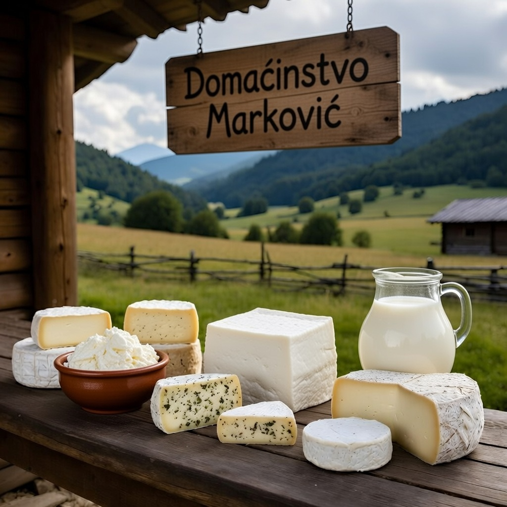

Domaćinstvo Marković
✅ Verifikovan
Stara Planina, okolina Pirota
Tradicionalno pravljenje kajmaka, ovčijeg sira, pavlake i kiselog mleka. Sve od naših životinja na pašnjaku Stara Planina. Bez aditiva i industrijskih procesa.
Proizvodi ovog prodavca